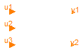

For all models in this package an FMU must be generated
Extends from Modelica.Icons.Package (Icon for standard packages).
| Name | Description |
|---|---|
| Counter | counter |
counter

Extends from Modelica.Blocks.Interfaces.BlockIcon (Basic graphical layout of input/output block).
| Type | Name | Description |
|---|---|---|
| input IntegerInput | u1 | 'input Integer' as connector |
| input IntegerInput | u2 | 'input Integer' as connector |
| input IntegerInput | u3 | 'input Integer' as connector |
| output IntegerOutput | y1 | 'output Integer' as connector |
| output IntegerOutput | y2 | 'output Integer' as connector |